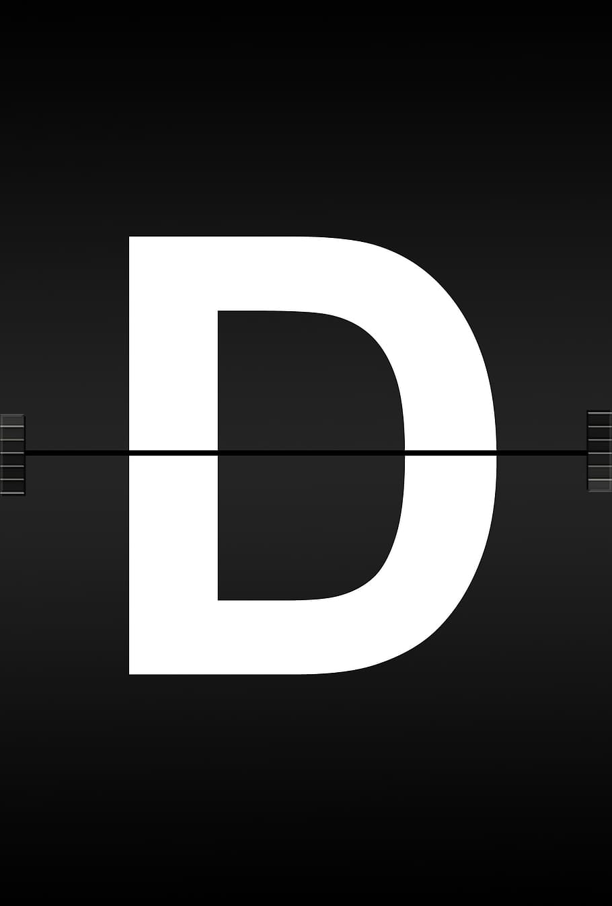

Juego
Ejercicios
Comunidad
Tu navegador no soporta el elemento de video.
Empieza a jugar
Iniciar
Tom2
El Tom 2 es un tambor de percusión de tamaño mediano a grande que se monta en el set de batería generalmente a la derecha del baterista (desde su perspectiva detrás del kit), cerca del Tom 1. Tiene un diámetro más grande que el Tom 1 y, por lo tanto, tiende a producir un tono más profundo y resonante. Se utiliza para proporcionar variaciones tonales y ritmos en la música, complementando el Tom 1 y añadiendo profundidad y riqueza al sonido de la batería.
Tom1
El Tom 1 es un tambor de percusión de tamaño mediano que generalmente se monta en el set de batería cerca de la parte superior del bombo, a la izquierda del baterista (desde su perspectiva detrás del kit). Tiene un diámetro más pequeño que el Tom 2 y, por lo tanto, tiende a producir un tono más agudo y corto en comparación con el Tom 2. Se utiliza para agregar variaciones rítmicas y melódicas al sonido de la batería, a menudo proporcionando acentos y patrones de ritmo distintivos.
Tom de Piso
También conocido como "floor tom", es el tambor más grande de la batería después del bombo. Se coloca en el suelo mediante patas ajustables y generalmente tiene un tono más profundo que los toms montados. Se utiliza para proporcionar ritmos y acentos más bajos en la música.
Redoblante
También llamado "snare drum", es un tambor de menor diámetro que el bombo y generalmente se coloca en un soporte entre las piernas del baterista. Tiene un juego de bordones debajo de la parte inferior de la piel que produce un sonido característico de cascabeleo cuando se golpea. Es versátil y se utiliza para crear ritmos y acentos, así como para proporcionar un golpe distintivo en la música.
Bombo
También conocido como "bass drum" en inglés, es el tambor más grande de la batería. Se coloca en el suelo y se toca mediante un pedal que acciona un batidor. Produce un sonido grave y profundo que marca el pulso o ritmo básico de la música.
Splash
Los platos de splash son platillos pequeños que producen un sonido brillante y rápido cuando se golpean. Se utilizan para efectos de acento rápidos y sutiles en la música.
Ride
El plato de ride es un platillo grande y pesado que produce un sonido definido y sostenido cuando se golpea con la baqueta. Se utiliza principalmente para mantener un ritmo constante y proporcionar un sonido de conducción en la música. También se pueden utilizar para crear patrones rítmicos complejos y para solos de batería.
Clash
Los platos de crash son platillos delgados que producen un sonido explosivo y de corta duración cuando se golpean con baquetas. Se utilizan para agregar impacto y énfasis en momentos específicos de la música, como cambios de sección o finales de frase.
HiHat
El hi-hat es un par de platillos montados en un soporte con un pedal que permite al baterista abrir y cerrar los platillos. Se utiliza principalmente para marcar el tiempo y proporcionar un ritmo constante en la música. También se pueden usar para crear patrones rítmicos complejos y efectos de sonido.